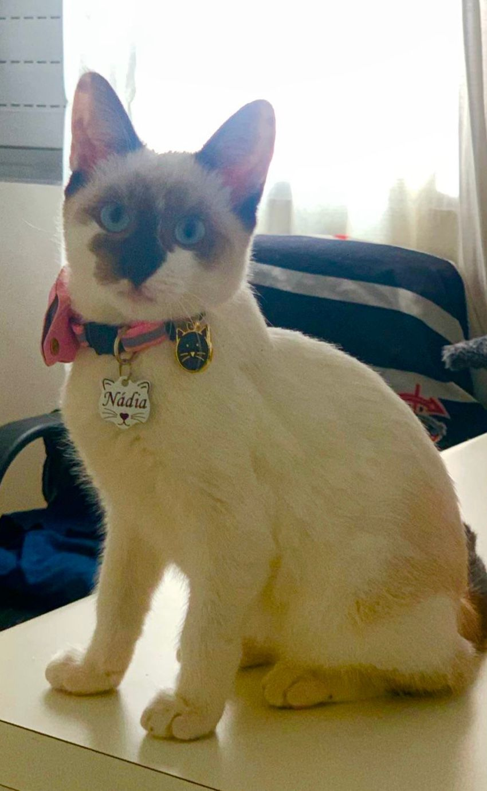
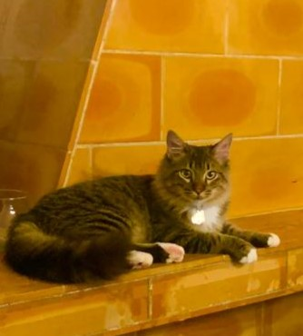

Nossa história começa com uma pata
A Focinho e Cia nasceu em 2026, quando jovens estudantes universitários da Universidade Presbiteriana Mackenzie decidiram transformar sua paixão pelos animais em um espaço acolhedor para todos os pets. Começamos como um pequeno banho e tosa no bairro e hoje somos referência em cuidado e bem-estar animal em Alphaville, Barueri - SP.
Nossa Missão
Proporcionar saúde, alegria e conforto para pets e tranquilidade para seus tutores. Tratamos cada animal com o mesmo carinho que damos aos nossos, usando produtos de qualidade e técnicas que respeitam o tempo e o temperamento de cada focinho.



Nossos Valores
Amor
Cada pet é único e merece atenção individual.
Qualidade
Só trabalhamos com marcas premium e equipamentos esterilizados.
Confiança
Portas abertas e câmeras no banho e tosa para você acompanhar.
Respeito
Nada de pressa ou estresse. O bem-estar vem primeiro.